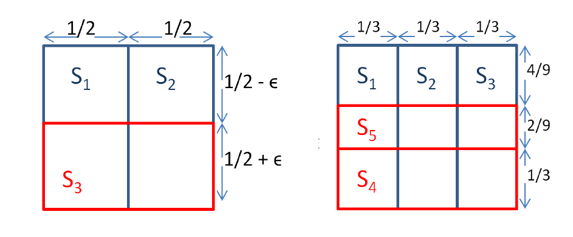

问题求解（三） Open Topic 14 笔记
OT：除MS和MAX-CUT外，近似算法还可用于解决其它问题，例如SCP（JH算法4.3.2.11）、SKP（JH算法4.3.4.1和4.3.4.2）等，请调研至少2种近似算法（其中至多1种来自上述例子，图上的优化问题不在调研范围内），结合例子介绍算法的设计与分析，重点阐述近似比的证明过程。
近似算法的设计
“看灯”问题[1]
简介
- 给定 \(N\) 盏灯，位置分别为 \(x_1, x_2, \cdots, x_N\)，满足 \(1\le x_i\le V\)。
- 再给定 \(Q\) 个询问 \(d_i, (1\le d_i\le V)\)，对每个询问求出最小的 \(v\in\lbrace 1, 2, \cdots, n\rbrace\) 使得在 \(x_v+d_i\) 处存在另一盏灯。
- 设 \(N\)，\(Q\)，\(V\) 为同一量级。
分析
该问题并非是难问题，存在朴素的 \(O(QN)\) 的实现。但若对于编号的“最小”可以进行一定的宽松，可以获得复杂度更低的算法。
考虑近似率为 \(\alpha\) 的算法，即允许输出的答案 \(v'\) 满足 \(v\le v'\le \alpha v\)，此时可以使用“区间划分”的思想对问题进行简化。
下界的确定
- 假若我们已确保对询问 \(d_i\)，对任意 \(v'< k\)，\(v'\) 均不满足 \(x_{v'}+d_i\) 处有灯，则最优解有下界 \(k\)。
- 此时，若编号在 \(v\in [k,\lfloor \alpha k\rfloor]\cap \mathbb Z\) 区间内的点有满足条件的，则最优解满足 \(v\in [k, \lfloor \alpha k\rfloor]\)，从而 \(v'=\lfloor \alpha k\rfloor\) 是原问题的一个满足近似率为 \(\alpha\) 的解。
- 否则，则证明了所有编号在 \([1,\lfloor \alpha k\rfloor]\) 中的点都不满足条件，最优解有新的下界 \(\lfloor \alpha k\rfloor+1\).
若不考虑下取整，重复 \(t\) 次上述步骤，下界序列为：
- \(low_1=1\);
- \(low_2=\alpha + 1\);
- \(low_3=\alpha(\alpha + 1) + 1\);
- \(\cdots\);
- \(low_t=\sum_{i=0}^{t-1}\alpha^i=\frac{\alpha^t-1}{\alpha-1}\).
令 \(low_t\le n\)，有 \(t\le\log_\alpha(\alpha(n-1)+1)\)，故 \(t=\Theta(\log_\alpha n)\). 于是至多进行 \(\Theta(\log_\alpha n)\) 次该操作。
询问的整体处理
于是，问题转化为了，对至多 \(\Theta(\log_\alpha n)\) 段形如 \([L, R]\) 的编号区间，对每个询问 \(d_i(1\le i\le Q)\)，判断是否存在 \(v\in [L, R]\) 使得 \(x_v+d_i\) 存在另一盏灯。
事实上，可以对所有 \(d_i\) 一起处理：构造两个序列 \(X_i\) 和 \(Y_i\)：
- \(X_i=1\) 当且仅当存在 \(v\in [L, R]\), \(x_v=i\)；否则为 \(0\)。
- \(Y_i=1\) 当且仅当存在 \(v\in [1, N]\)，\(x_v=i\)；否则为 \(0\)。
- "存在多少对 \((x, y)\) 满足 \(x\in [L, R], y\in [1, n], s.t. x+d=y\)" 也可以形成一个序列 \(Z_d\)，计算方法为
\[ Z_d=\sum_{1\le i, j\le V, j-i=d}X_iY_j. \]
\(Z_d\) 的快速计算
可以将 \(X\) 序列翻转，变成加法卷积：
\[ \begin{align*} Z_d &=\sum_{1\le i, j\le V, j-i=d}X_iY_j\\ &=\sum_{1\le i, j\le V, j+(V-i+1)=d+V+1}X_{V+1-(V-i+1)}Y_j\\ &=\sum_{1\le i, j\le V, j+i'=d+V+1}X'_{i'}Y_j\\ &=(X'*Y)_{d+V+1} \end{align*} \]
其中，\(i'=V-i+1, X'_k = X_{V+1-k}\)。
而加法卷积可以使用快速傅里叶算法在 \(\Theta(V\log V)\) 时间内计算。之后对每个询问 \(d_i\)，只需判断 \(Z_{d_i}\) 是否为 \(0\) 即可。
算法分析
最朴素的算法为 \(O(QN)\)；
该算法在近似率为 \(\alpha\) 的情况下，共至多运行 \(O(\log_\alpha N)\) 轮区间 \([L, R]\) 的查询，单次复杂度为 \(O(V\log V+Q)\)，故总复杂度为 \(O((V\log V+Q)\log_\alpha N)\)。
集合覆盖问题
问题描述
- 给定 \(m\) 个集合 \(S_1, S_2, \cdots, S_m\) 和 \(k\)，要求选定其中 \(k\) 个 \(S_{p_1}, S_{p_2}, \cdots, S_{p_k}\)，最大化 \(S_{p_1}\cup S_{p_2}\cup\cdots, S_{p_k}\)。
- 该问题为 NPC。
贪心算法
对以下步骤进行 \(k\) 轮：
- 第 \(i\) 轮，每次选择集合 \(S_{p_i}\) 最大化新增的并集大小。

如上图，可构造出近似率不高于 \(\displaystyle 1-(1-\frac{1}{k})^k\) 的样例。
- (方便起见，此处近似率未取倒数，定义为 \(\alpha=\text{Now-Sol}/OPT\))
近似率证明
Theorem 1: 该贪心算法的近似率恰为 \(\displaystyle(1-(1-\frac{1}{k})^k)\)，故该近似率估计是紧的。
Theorem 2: 在某些复杂度假设下，不存在有更优近似率的多项式复杂度算法。
要证明 Theorem 1，先证明引理
Lemma: 设贪心算法选择出前 \(i-1\) 个集合为 \(S_{p_1}, S_{p_2}, \cdots, S_{p_{i-1}}\)，它们覆盖了 \(l\) 个元素，则第 \(i\) 轮选择的 \(A_i\) 会覆盖至少
\[ \frac{1}{k}(OPT-l) \] 个新元素，\(OPT\) 为最优解。
Proof: 假设该轮贪心算法可以直接取走 \(k\) 个集合，则可以立即取到 \(OPT\) 个元素，获得至少 \(OPT-l\) 个新元素。故这 \(k\) 个中至少有一个集合有至少 \(\frac{1}{k}(OPT-l)\) 个新元素。
近似率证明
Theorem 1: 该贪心算法的近似率恰为 \(\displaystyle(1-(1-\frac{1}{k})^k)\)，故该近似率估计是紧的。
Proof:
设第 \(i\) 轮共取了 \(f_i\) 个元素，则有 \(f_0=0\)，且
\[ f_i\ge f_{i-1}+\frac{1}{k}(OPT-f_{i-1})=\frac{1}{k}OPT+(1-\frac{1}{k})f_{i-1}. \]
解递推式有
\[ f_{i}\ge OPT+(1-\frac{1}{k})^k(f_0-OPT)=OPT\cdot (1-(1-\frac{1}{k})^k). \]
故
\[ \frac{f_i}{OPT}\ge 1-(1-\frac{1}{k})^k \] 近似率为 \(\displaystyle \alpha=1-(1-\frac{1}{k})^k\).
参考资料
[1] 2023 ICPC Hangzhou Regional Contest.
[2] CS 261: A Second Course in Algorithms, note: https://timroughgarden.org/w16/w16.html